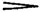

配器法原理：繁體中文版
銅管樂器
銅管樂器
銅管組和木管組一樣，並沒有絕對一致的編制，會隨不同總譜改變。大致可分成三類，分別對應木管的雙管、三管與四管編制。-22-
| 對應木管 雙管編制 | 對應木管 三管編制 | 對應木管 四管編制 |
| （II兼高音小號） | ||
| 2小號 I、II | 3小號 I、II、III | 3小號 I、II、III |
| （III兼中音小號 | （III兼中音小號或 | |
| 或改用： | 低音小號） | |
| { 2短號 I、II | ||
| { 2小號 I、II） | ||
| 4法國號 I、II、III、IV | 4法國號 I、II、III、IV | 6或8法國號 I、II、III、IV、V、VI、VII、VIII |
| 3長號 | 3長號 I、II、III | 3長號 I、II、III |
| 1低音號 | 1低音號[8] | 1低音號 |
讀法與前面的木管表相同。顯然，這三類都可以依作曲家的意願變動。劇院或音樂廳的作品中，可能連續許多頁不用小號、長號與低音號，也可能暫時加入某件額外樂器。上表列的是本書時代最典型、最常見的配置。
註一：除了上述樂器，理查・華格納在《指環》中還用了其他樂器，尤其是由次中音與低音型組成的四部華格納低音號，以及倍低音長號。這些附加樂器有時過於沉重，壓住其他組別；有時又使其餘銅管失去效果。作者認為，其他作曲家無疑因此避免使用它們，華格納自己也沒有把它們編入《帕西法爾》。當時有些作曲家，例如理查・史特勞斯與史克里亞賓，會寫到五支小號。
註二：原書概述，自19世紀中葉起，自然銅管逐漸退出樂團，由活塞或轉閥樂器取代。我在第二部歌劇《五月之夜》仍使用自然法國號與自然小號，更換樂器調性，並把合適的音寫成「悶塞音」；這是刻意作的練習。
銅管雖遠不如木管靈活，卻能以有力的聲響，強化其他管弦樂組的效果。小號、長號與低音號的力量大致相當；-23-短號稍弱。法國號在強奏段落，大約只有它們一半的力量；但弱奏時，與其他銅管輕奏的份量相同。因此，要取得平衡，作者建議法國號的力度標記比其餘銅管強一級：若小號與長號奏pp，法國號就標p。另一方面，強奏時要與一支小號或一支長號平衡，就需要兩支法國號。
作者認為，銅管樂器在音域與音色上相當相似，無須再逐一討論音域分區。一般而言，越接近高音域，音質越明亮；往低音域則相反，聲音也逐漸減弱。極弱奏（pp）時柔甜，極強奏（ff）時硬而帶有「爆裂」感。銅管特別善於由極弱漸增至極強，也善於反向收小音量；先突強、再漸弱至弱奏的sf

p效果尤其出色。關於各樂器的性格與音質，還可補充以下觀察：
a）
1. 小號（B♭調、A調）：音色清晰，頗有穿透力；強奏振奮、激昂，弱奏樂句中的高音飽滿、銀亮，低音則不安，彷彿預示危險。
2. 中音小號（F調）：這是我所設計的樂器，首先用於歌劇芭蕾《姆拉達》。在小號音列第2至第3音之間的低音域，它的聲音更飽滿、清晰、美好。兩支普通小號加一支中音小號，比三支普通小號能得到更平順、均勻的聲響。我對中音小號的美感與實用性很滿意，因此後期採三管木管編制的作品，一貫搭配它使用。
註：為了避免一般劇院與某些音樂廳難以取得中音小號，我沒有使用它最低音域的最後四個音，以及相鄰的半音。這樣，中音小號聲部也能改由普通B♭調或A調小號演奏。
3. 高音小號（E♭調、D調）：由我設計，也首次用於《姆拉達》，以便較容易奏出小號的極高音。-24-它的調性與音域，類似軍樂隊中的高音短號。
註：原書寫道，比普通小號高八度的B♭調、A調小型小號，當時尚未出現在音樂作品中。
b）
短號（B♭調、A調）：音質與小號相近，但更柔和、較弱。這是美好的樂器，只是在本書時代的劇院與音樂廳較少使用。熟練樂手能用小號模仿短號音色，反過來也可以。
c）
法國號（F調）：音色柔和、富於詩意，充滿美感。低音域深暗而明亮，高音域圓潤、飽滿。中音類似低音管，兩者很能融合，因此法國號是連接銅管與木管的橋梁。儘管具有活塞或轉閥，作者仍認為它不太敏捷，發聲帶著倦怠、慵懶的感覺。
d）
長號：最深的低音暗沉、帶威脅感，高音域燦爛、勝利般昂揚。弱奏飽滿，但有些沉重；強奏有力、宏亮。閥式長號比伸縮管長號更敏捷，但論聲音的高貴與均勻，後者確實較佳。尤其依這些樂器特有的音色性格，作者很少要求它們演奏快速段落，因此更應優先考慮後者。
e）
低音號：音質厚重、粗獷，個性不如長號鮮明，但低音的力量與美感很有價值。和低音提琴、倍低音管一樣，它特別適合在所屬組別的低音下方八度作重複配置。有了活塞或轉閥，低音號相當靈活。
{kind=link}
譯註來源：VSL Academy：法國號記譜、雙吐、悶塞與弱音器
- Trumpet, Cornet（B♭–A, alto in F）＝小號、短號（B♭調、A調；
- 中音小號為F調）；
- Horn（F, E）＝法國號（F調、E調）；
- Trombone（tenor-bass）＝次中低音長號；
- Tuba（C-bass）＝C調低音號。
各譜上方1、2、3、4等阿拉伯數字為自然泛音序號，空心音符標出對應泛音，最高到法國號第16泛音。
- 上方括線表示最具表情音域；
- 下方little used＝很少使用，not often used＝不常使用，very frequent＝非常常用。
- 星號與雙星號對應註A、B：第7自然泛音在各行省略，法國號另省略第11、13、14、15泛音；
- 長號行括號內的還原音B1，是原書指出無法奏出的音。
- 法國號在同一行由舊式低音譜號切換高音譜號；
- 長號高音端改用次中音C譜號。
這些音符列的是音高及用途，空心與實心不在這裡表示一段可直接按時值演奏的旋律。
銅管組各成員的聲響雖然均勻一致，但作者認為，若嚴格按前文對「表情」的定義，它不如木管組適合細膩表情的演奏。不過，中音域仍可劃出最具表情的範圍。-26--25-E♭調、D調高音小號及低音號，和短笛、倍低音管一樣，被作者歸為不以豐富表情見長的樂器。所有銅管都能單吐，以快速、規律節奏重複同音；原書則說，雙吐只能用於吹嘴較小的小號與短號。這兩種樂器能輕易奏出快速反覆音（tremolando）。木管章對換氣的提醒，同樣適用於銅管。
譯註來源：VSL Academy：法國號記譜、雙吐、悶塞與弱音器、VSL Academy：次中音長號雙吐
悶塞音與弱音器都會改變銅管音色。原書說，手塞喇叭口的悶塞音只能用於小號、短號與法國號；長號和低音號的形狀，使手無法這樣伸入喇叭口。雖然管弦樂各種銅管都能使用弱音器，當時的低音號卻很少配備。悶塞與加弱音器所得音質相似；在小號上，加弱音器的聲音比手塞更好。
法國號兩種方法都用：短樂句中的個別音用手塞，較長的樂句則加弱音器。我不打算詳述兩種操作的差別，讀者可以自己了解，再由親自觀察判斷它的重要性。這裡只須說，兩者都使聲音變暗、變弱；強奏時呈現狂野的「爆裂」感，弱奏時柔細而暗淡。聲響大幅減少，銀亮感消失，轉而接近雙簧管與英國管的音色。原書把悶塞音與con sordino並列，說明可在音符下標+；有時接著標，表示恢復開放音，並寫senza sordini。銅管加弱音器，能產生遙遠的效果。
譯註來源：VSL Academy：法國號記譜、雙吐、悶塞與弱音器
查看英文原文
Brass.
The formation of the group of brass instruments, like that of the wood-wind is not absolutely uniform, and varies in different scores. The brass group may be divided into three general classes corresponding to those of the wood-wind (in pair's, in three's, and in four's).-22-
| Group corresponding to the wood-wind in pair's |
Group corresponding to the wood-wind in three's |
Group corresponding to the wood-wind in four's |
| (II—Small trumpet). | ||
| 2 Trumpets I, II. | 3 Trumpets I, II, III. | 3 Trumpets I, II, III. |
| (III—Alto trumpet | (III—Alto trumpet or | |
| or: | Bass trumpet.) | |
| { 2 Cornets I, II. | ||
| { 2 Trumpets I, II.) | ||
| 4 Horns I, II, III, IV. | 4 Horns I, II, III, IV. | 6 or 8 Horns I, II, III, IV, V, VI, VII, VIII. |
| 3 Trombones. | 3 Trombones I, II, III. | 3 Trombones I, II, III. |
| 1 Tuba. | 1 Tuba[8]. | 1 Tuba. |
The directions are the same as in the preceding table for wood-wind. It is evident that in all three classes the formation may vary as the composer wishes. In music for the theatre or concert room page after page may be written without the use of trumpets, trombones and tuba, or some instrument may be introduced, temporarily as an extra. In the above table I have given the most typical formations, and those which are the most common at the present day.
Note I. Besides the instruments given above, Richard Wagner used some others in The Ring, notably the quartet of tenor and bass tubas, and a contrabass trombone. Sometimes these additions weigh too heavily on the other groups, and at other times they render the rest of the brass ineffective. For this reason composers have doubtless refrained from employing such instruments, and Wagner himself did not include them in the score of Parsifal. Some present-day composers (Richard Strauss, Scriabine) write for as many as five trumpets.
Note II. From the middle of the 19th century onward the natural brass disappeared from the orchestra, giving place to valve instruments. In my second opera, The May Night I used natural horns and trumpets, changing the keys, and writing the best notes "stopped"; this was purposely done for practise.
Though far less flexible than the wood-wind, brass instruments heighten the effect of other orchestral groups by their powerful resonance. Trumpets, trombones, and tubas are about equal in-23- strength; cornets have not quite the same force; horns, in forte passages, are about one half as strong, but piano, they have the same weight as other brass instruments played softly. To obtain an equal balance, therefore, the marks of expression in the horns should be one degree stronger than in the rest of the brass; if the trumpets and trombones play pp, the horns should be marked p. On the other hand, to obtain a proper balance in forte passages, two horns are needed to one trumpet or one trombone.
Brass instruments are so similar in range and timbre that the discussion of register is unnecessary. As a general rule quality becomes more brilliant as the higher register is approached, and vice versa, with a decrease in tone. Played pp the resonance is sweet; played ff the tone is hard and "crackling". Brass instruments possess a remarkable capacity for swelling from pianissimo to fortissimo, and reducing the tone inversely, the sf p effect being excellent.
The following remarks as to character and tone quality may be added:
a）
1. Trumpets (B♭-A). Clear and fairly penetrating in tone, stirring and rousing in forte passages; in piano phrases the high notes are full and silvery, the low notes troubled, as though threatening danger.
2. Alto trumpet (in F). An instrument of my own invention, first used by me in the opera-ballet Mlada. In the deep register (notes 2 to 3 in the trumpet scale) it possesses a fuller, clearer, and finer tone. Two ordinary trumpets with an alto trumpet produce greater smoothness and equality in resonance than three ordinary trumpets. Satisfied with the beauty and usefulness of the alto trumpet, I have consistently written for it in my later works, combined with wood-wind in three's.
Note. To obviate the difficulty of using the alto trumpet in ordinary theatres and some concert rooms, I have not brought into play the last four notes of its lowest register or their neighbouring chromatics; by this means the alto trumpet part may be played by an ordinary trumpet in B♭ or A.
3. Small trumpet (in E♭-D). Invented by me and used for the first time in Mlada to realise the very high-24- trumpet notes without difficulty. In tonality and range the instrument is similar to the soprano cornet in a military band.
Note. The small trumpet, (B♭-A) sounding an octave higher than the ordinary trumpet has not yet appeared in musical literature.
b）
Cornets (in B♭-A). Possessing a quality of tone similar to the trumpet, but softer and weaker. It is a beautiful instrument though rarely employed today in theatre or concert room. Expert players can imitate the cornet tone on the trumpet, and vice versa.
c）
Horn (in F). The tone of this instrument is soft, poetical, and full of beauty. In the lower register it is dark and brilliant; round and full in the upper. The middle notes resemble those of the bassoon and the two instruments blend well together. The horn, therefore, serves as a link between the brass and wood-wind. In spite of valves the horn has but little mobility and would seem to produce its tone in a languid and lazy manner.
d）
Trombone. Dark and threatening in the deepest register, brilliant and triumphant in the high compass. The piano is full but somewhat heavy, the forte powerful and sonorous. Valve trombones are more mobile than slide trombones, but the latter are certainly to be preferred as regards nobility and equality of sound, the more so from the fact that these instruments are rarely required to perform quick passages, owing to the special character of their tone.
e）
Tuba. Thick and rough in quality, less characteristic than the trombone, but valuable for the strength and beauty of its low notes. Like the double bass and double bassoon, the tuba is eminently useful for doubling, an octave lower, the bass of the group to which it belongs. Thanks to its valves, the tuba is fairly flexible.
Table C. Brass group.
These instruments give all chromatic intervals.[A] [B]
[Enlarge]
Natural sounds are given in white notes. The upper lines indicate the scope of greatest expression.
The group of brass instruments, though uniform in resonance throughout its constituent parts, is not so well adapted to expressive playing (in the exact sense of the word) as the wood-wind group. Nevertheless, a scope of greatest expression may be distinguished-26--25- in the middle registers. In company with the piccolo and double bassoon it is not given to the small trumpet (E♭-D) and tuba to play with any great amount of expression. The rapid and rhythmical repetition of a note by single tonguing is possible to all members of the brass, but double tonguing can only be done on instruments with a small mouth-piece, trumpets and cornets. These two instruments can execute rapid tremolando without difficulty. The remarks on breathing, in the section devoted to the wood-wind, apply with equal force to the brass.
The use of stopped notes and mutes alters the character of brass tone. Stopped notes can only be employed on trumpets, cornets and horns; the shape of trombones and tubas prevents the hand from being inserted into the bell. Though mutes are applied indiscriminately to all brass instruments in the orchestra, tubas rarely possess them. Stopped and muted notes are similar in quality. On the trumpet, muting a note produces a better tone than stopping it.
In the horn both methods are employed; single notes are stopped in short phrases, muted in longer ones. I do not propose to describe the difference between the two operations in detail, and will leave the reader to acquire the knowledge for himself, and to form an opinion as to its importance from his own personal observation. Sufficient to say that the tone is deadened by both methods, assuming a wild "crackling" character in forte passages, tender and dull in piano. Resonance is greatly reduced, the silvery tone of the instrument so lost and a timbre resembling that of the oboe and Eng. horn is approached. Stopped notes (con sordino) are marked + underneath the note, sometimes followed by , denoting the resumption of open sounds, senza sordini. Brass instruments, when muted, produce an effect of distance.